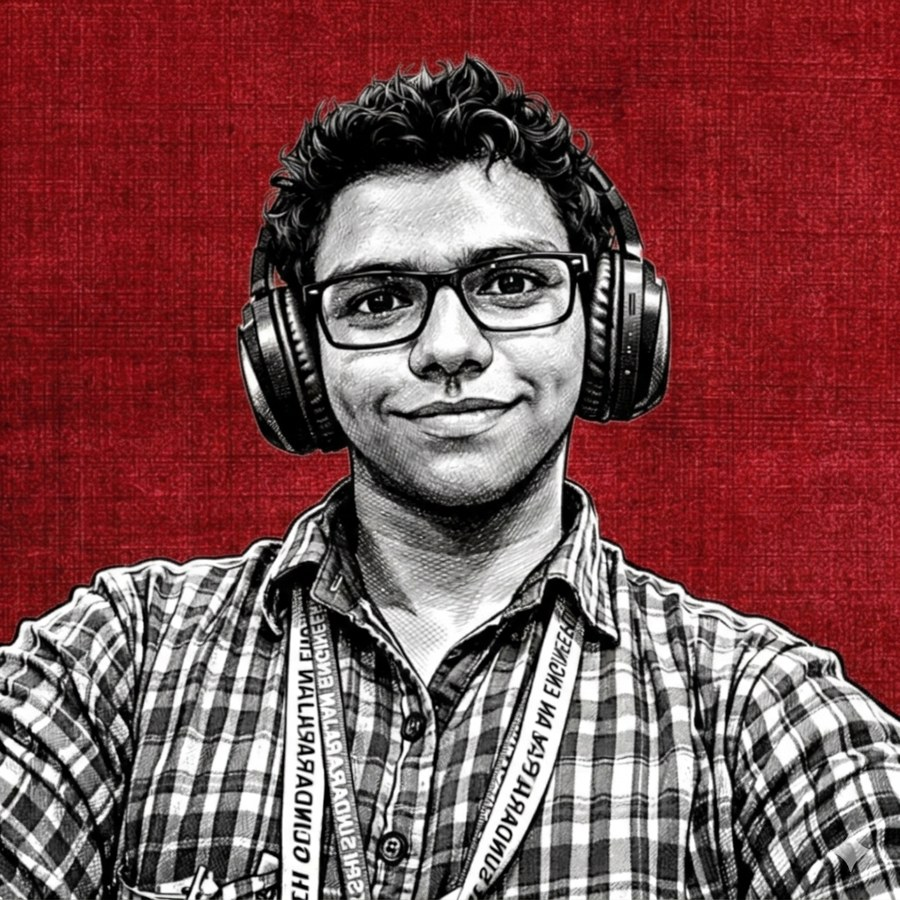

ditch-windows
Pack up Windows. Put it back. One encrypted backup rebuilds a Windows 11 machine: apps, Wi-Fi, fonts, theme, default apps, and personal folders. It previews every restore; nothing writes without --apply.
Chennai, India / open to internships
Computer science undergraduate building open-source tools that stay useful: a Windows restore kit, a reader for all 1,430 Angs, and whatever the terminal complains about next.

Five projects I use myself, plus the ones that started as a favour for a friend or a community. Every link goes somewhere real.
Pack up Windows. Put it back. One encrypted backup rebuilds a Windows 11 machine: apps, Wi-Fi, fonts, theme, default apps, and personal folders. It previews every restore; nothing writes without --apply.
A verse-by-verse reader for the Sri Guru Granth Sahib Ji and the Nitnem Banis. Translations in four languages, word-by-word meanings, the daily Hukamnama, and reading plans. Built as sewa.
Turns meeting audio into notes you can scan. Whisper handles transcription; you choose the LLM provider. Runs locally when privacy matters.
A Windows-native port of taigrr/spank. The microphone listens for a short impact; Go and Fyne do the yelling. Three modes, a sensitivity slider, and one executable.
Mini brain teasers unlock meme stickers. A beginner-friendly React and TypeScript app with an Express and SQLite backend.
Smaller builds, community contributions, and talks.
I learn by building the thing, breaking it, and then reading the manual. Most of that happens in public, on GitHub.
I’m a computer science undergraduate in Chennai who would rather learn by building the thing than by watching someone else build it.
I study Computer Science and Engineering at Meenakshi Sundararajan Engineering College, alongside the IIT Madras B.Sc. in Data Science and Applications. Most of what I know comes from open source: reading other people’s code, opening pull requests, and shipping small tools until they hold up.
I care about FOSS and Linux, strong data structures and algorithms in C++, and a technical career in public service. I wrote Open Source Is All You Need: Empowering Innovation Through Free and Open Source Software because I want more students to see open source as a practical way to learn, not a club they need permission to join.
Now: Technical Consultant at Upfinity / contributor to FOSS United Chennai.
“Failure is nothing till you lose the ability to try things. எல்லாம் மாறும்!!”
Community work, a consultancy role, and a lot of pull requests. The dates are real; the commit history does the rest.
Consulting on client projects, reviewing workflows, finding bugs, and pushing product improvements.
Contributing to tamilnadu.tech through pull requests, CI/CD, and SEO on the community’s Next.js site.
Pull requests to the CollegeSapien repo, plus campus volunteering.
Community work for a DevOps-focused learning group.
Tech support for the DeepTech track.
Issues, pull requests, and features on real GitHub projects.
Campus representative at MSEC: student engagement, outreach, and campus tech initiatives.
Member of Sundarbans House in the IIT Madras BS degree programme.
No proficiency bars. Either I’ve shipped with it or I’m learning it. The second list is the more interesting one.
I wrote a book about open source before I had a blog. The book is real; the longer notes live in Notion.
OPEN SOURCE / A FIELD NOTE
Empowering Innovation Through Free and Open Source Software
Occasionally about Linux, open source, and the things I break while learning. The longer notes live in Notion; the code lives on GitHub.
No posts here yet. When there is one, it will be about Linux, open source, and what I broke while learning.
Read my NotionI’m looking for internships and collaborations where I can learn fast and ship something useful. If you’re building in the open, even better.